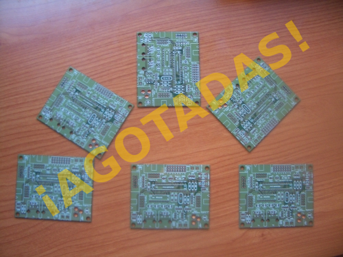

Queríamos
dar las gracias a las siguientes personas, empresas e instituciones
por su ayuda en la financiación de la
Skypic 2009 y su apoyo al
hardware libre.
Sin vosotros esto no hubiera sido posible. Muchísimas gracias, de verdad.
Vuestros nombres están puestos en los
créditos de la Skypic:
Artifact Consulting (7 PCBs).
Ingenieros y Expertos en el campos de la Informática y las nuevas tecnología.
Pozuelo, Madrid. Director técnico: Raul Lapeira Herrero
Isidoro Gayo Vélez (2 PCBs). Pola de Gordón, León.
Juan Manuel Domínguez García-Cuevas (2 PCBs). Marbella, Málaga.
CEIEC (1 PCBs).
Centro de Innovación Experimental del Conocimiento. Universidad Francisco de Vitoria
Quoriam Ingenieros SL (1 PCB).
Consultoría y desarrollo de sistemas y aplicaciones informáticas a medida. Madrid.
Francesc Constans Cots (1 PCB).
Secretario de la junta directiva de A.R.D.E. Barcelona.
Vicente Torres Torres (1 PCB).
Socio fundador de A.R.D.E. Sant Jordi de ses salines, Ibiza.
Ander Welton (1 PCB). Ingeniero en informática de Sistemas. Castellbisbal, Barcelona
Alfredo García Villarejo (1 PCB). León.
Patrick Tamellini (1 PCB). Torremolinos, Málaga
Andrés Alvarez Skinner (1 PCB). Techsweb S.L. Madrid
Raul Frías Ríos (1 PCB). Parla. Madrid.
El 3 de noviembre del 2009,
lanzamos esta iniciativa,
en la que pedíamos ayuda para la financiación de la Skypic 2009.
Esta versión, es similar a la Skypic “de toda la vida”, pero migrada al
Kicad,
por lo que se convierte en Hardware libre2
con las ventajas que eso conlleva
(Más información aquí).
Muchísimas gracias 🙂
Obijuan
Muchas gracias a ti!, montada y funcionando, las persianas están impacientes..
jajajja Domótica a saco!!!!
Los felicito por haber logrado recolectar la partida de dinero para seguir con sus investigaciones.
Se no fuera mucha molestia desearía adquirir 2 skypic.
Resido en el Perú y deseo seguir investigando y me seria de mucha utilidad.